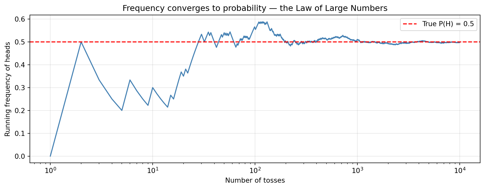

Every day you make decisions under uncertainty. Will the bridge hold? Is this email spam? Will the drug work? Will it rain? You cannot know the answer with certainty — but you are not helpless. You can reason carefully about the likelihood of different outcomes, and that reasoning is what probability theory formalises.
NoteA conversation at a hospital
Relative: Nurse, what is the probability the drug will work?
Nurse: I hope it works — we’ll know tomorrow.
Relative: Yes, but what is the probability it will?
Nurse: Each case is different. We have to wait.
Relative: Out of a hundred patients treated under similar conditions, how many times would you expect it to work?
Nurse:(somewhat annoyed) I told you, every person is different.
Relative: Then if you had to bet whether it will work — which side would you take?
Nurse:(cheering up briefly) I’d bet it will work.
Relative: Would you accept losing $2 if it doesn’t, and gaining $1 if it does?
Nurse:(exasperated) What a sick thought! You are wasting my time!
This exchange captures something important. The relative is trying to get the nurse to express a probability — a number that captures how likely something is. The nurse resists, but by agreeing to bet on one side, she has already revealed that she believes the probability of success is above 50%. And if she had accepted the 2-to-1 bet, we could infer she believes it is above 2/3.
Probability is not just an academic tool. It is the language of uncertainty — used in weather forecasting, medical diagnosis, engineering reliability, financial risk, and machine learning. The goal of this chapter is to build this language carefully, from first principles.
3.2 1. The Probabilistic Model
A probabilistic model is a mathematical description of an uncertain situation. Every probabilistic model is built in exactly two steps:
Describe the sample space — list all possible outcomes.
Assign a probability law — specify how likely each outcome (or collection of outcomes) is.
This two-step structure is the backbone of everything that follows. Let us look at each part carefully.
3.3 2. The Sample Space
3.3.1 Definition
ImportantSample Space
The sample space\Omega is the set of all possible outcomes of an experiment. Each element of \Omega is called an outcome.
For \Omega to be valid, the outcomes must satisfy two properties:
Mutually exclusive: At the end of the experiment, exactly one outcome occurs. No two distinct outcomes can both occur.
Collectively exhaustive: Together, the outcomes cover all possibilities. No matter what happens, one outcome from \Omega must occur.
Summary: At the end of the experiment, you can point to one — and exactly one — outcome in \Omega.
3.3.2 The Granularity Principle
How much detail should a sample space contain? The answer depends on the questions you want to answer.
Option B is not wrong — it is still mutually exclusive and collectively exhaustive. But it includes weather information that is irrelevant to the coin. Option A is the right choice unless you believe weather affects the coin’s outcome.
TipThe Granularity Principle
Include details that are relevant to the questions you want to answer. Exclude details that are irrelevant — they only add complexity without improving the model.
The right level of detail is not always obvious. Consider a clinical trial:
Too little detail: \Omega = \{\text{drug works},\ \text{drug doesn't work}\} — cannot capture how well it works.
Too much detail: \Omega = \{\text{every molecular interaction in every patient}\} — impossible to work with.
The sample space is all 8 leaf nodes: \Omega = \{\text{HHH, HHT, HTH, HTT, THH, THT, TTH, TTT}\}
Each path from root to leaf represents one complete outcome. Tree diagrams are especially useful because they make it impossible to miss outcomes or double-count them.
3.3.5 Continuous Sample Spaces
Some experiments have outcomes that take any value in a continuous range.
Example: Throwing a dart at a unit square.
\Omega = \{(x, y) \mid 0 \le x \le 1,\ 0 \le y \le 1\}
Here (x, y) is the position where the dart lands, measured with infinite precision. There are uncountably many possible outcomes — you cannot list them. This is a continuous sample space.
3.4 3. Events
In a continuous sample space, asking “what is the probability of landing on exactly the point (0.5, 0.3)?” leads to trouble — there are infinitely many points, so if each had positive probability, the total would be infinite. The solution is to assign probabilities to regions, not individual points.
ImportantEvent
An event is any subset A \subseteq \Omega of the sample space. We say event Aoccurs if the outcome of the experiment is an element of A.
Examples for the dart throw:
A = \{(x,y) \mid x + y \le 0.5\} — the dart lands in the lower-left triangle.
B = \{(x,y) \mid x \ge 0.5\} — the dart lands in the right half.
C = \{(0.5, 0.3)\} — the dart lands on a specific point (probability will be 0).
3.4.1 Set Operations on Events
Since events are sets, all set operations apply:
Operation
Symbol
Meaning
Complement
A^c
A does not occur
Union
A \cup B
A or B (or both) occur
Intersection
A \cap B
Both A and B occur
Disjoint
A \cap B = \emptyset
A and B cannot both occur
These operations are your main tools for building complex events from simple ones.
3.5 4. Probability Laws and Axioms
3.5.1 Motivation
We need a rule that assigns a number P(A) to every event A, capturing how likely it is. What properties should such a rule have?
Think about it intuitively:
A likelihood below zero makes no sense — so probabilities must be non-negative.
Something must happen — so the total probability of the entire sample space must be 1.
If two events cannot both occur (disjoint events), the probability of either one happening is the sum of their individual probabilities. Rolling a 1 or a 2 on a fair die has probability \frac{1}{6} + \frac{1}{6} = \frac{1}{3}.
These three intuitions are not arbitrary. They turn out to be exactly the minimum set of rules needed for a consistent and useful theory of probability. They are the axioms.
ImportantThe Kolmogorov Axioms
A probability lawP is a function that assigns a number P(A) to every event A \subseteq \Omega, satisfying:
(A1) Non-negativity.P(A) \ge 0 for every event A.
(A2) Normalization.P(\Omega) = 1.
(A3) Additivity. If A and B are disjoint (A \cap B = \emptyset), then P(A \cup B) = P(A) + P(B).
Think of probability as mass. Imagine spreading 1 kilogram of mass over the sample space. P(A) is the mass sitting on top of region A. Non-negativity says mass can’t be negative. Normalization says the total mass is 1 kg. Additivity says non-overlapping regions just add their masses.
Three axioms. That is the entire foundation. Everything else in probability — every formula, theorem, and proof — follows from these three.
3.5.2 Extending Additivity to Infinite Sequences
The additivity axiom above handles two disjoint events. But many experiments have infinitely many possible stages. Consider tossing a coin until the first heads appears — the number of tosses could be 1, 2, 3, … with no bound. The events “first heads on toss n” are mutually exclusive for different n, and together they cover all possibilities. We need:
For this to work, we need to extend the additivity axiom:
ImportantCountable Additivity
If A_1, A_2, A_3, \ldots is an infinite sequence of pairwise disjoint events, then: P\!\left(\bigcup_{i=1}^{\infty} A_i\right) = \sum_{i=1}^{\infty} P(A_i)
The word sequence here is critical — we need the events to be arrangeable in a list (countably many). This works for coin tosses, dice rolls, integers. It does not apply to uncountable collections like every individual point in [0,1] — we will see why shortly.
3.6 5. Derived Properties of Probability
From just the three axioms, we can derive every useful property of probability. Here are the key ones:
3.6.1 Complement Rule
P(A^c) = 1 - P(A)
Proof.A and A^c are disjoint and A \cup A^c = \Omega. By A3: P(A) + P(A^c) = P(\Omega) = 1. \blacksquare
Example: If there is a 30% chance of rain, there is a 70% chance of no rain.
3.6.2 Probability of the Empty Set
P(\emptyset) = 0
Proof.\Omega^c = \emptyset, so by the complement rule: P(\emptyset) = 1 - P(\Omega) = 1 - 1 = 0. \blacksquare
Proof. Write B = A \cup (B \cap A^c). These are disjoint, so P(B) = P(A) + P(B \cap A^c) \ge P(A) since P(B \cap A^c) \ge 0. \blacksquare
Intuition: If A is a subset of B, then whenever A occurs, B also occurs — so B is at least as likely.
3.6.6 Inclusion-Exclusion
P(A \cup B) = P(A) + P(B) - P(A \cap B)
Proof. Decompose A \cup B into three disjoint pieces:
a = A \cap B^c (only in A)
b = A \cap B (in both)
c = B \cap A^c (only in B)
Then P(A \cup B) = a + b + c, P(A) = a + b, P(B) = b + c, so P(A) + P(B) - P(A \cap B) = (a+b) + (b+c) - b = a + b + c. \blacksquare
When two events overlap, you must subtract the overlap to avoid counting it twice.
3.6.7 Union Bound (Boole’s Inequality)
P(A \cup B) \le P(A) + P(B)
This follows immediately from inclusion-exclusion since P(A \cap B) \ge 0. It is useful when you want a quick upper bound and computing P(A \cap B) is hard.
import numpy as np# Verify all properties numerically on the 4-sided die exampleomega = {(i, j) for i inrange(1, 5) for j inrange(1, 5)}n =len(omega) # 16def P(event):returnlen(event) / n# Define eventsA = {(i, j) for i, j in omega if i ==1} # first roll = 1B = {(i, j) for i, j in omega if i + j >=7} # sum >= 7print(f"P(A) = {P(A):.4f}")print(f"P(B) = {P(B):.4f}")print(f"P(A^c) = {P(omega - A):.4f} (should be 1 - P(A) = {1- P(A):.4f})")print(f"P(A ∩ B) = {P(A & B):.4f}")print(f"P(A ∪ B) = {P(A | B):.4f}")print(f"P(A) + P(B) - P(A ∩ B) = {P(A) + P(B) - P(A & B):.4f} (inclusion-exclusion ✓)")print(f"P(A) + P(B) = {P(A) + P(B):.4f} (union bound ≥ P(A ∪ B) ✓)")
P(A) = 0.2500
P(B) = 0.1875
P(A^c) = 0.7500 (should be 1 - P(A) = 0.7500)
P(A ∩ B) = 0.0000
P(A ∪ B) = 0.4375
P(A) + P(B) - P(A ∩ B) = 0.4375 (inclusion-exclusion ✓)
P(A) + P(B) = 0.4375 (union bound ≥ P(A ∪ B) ✓)
3.7 6. The Discrete Uniform Law
The axioms tell us what conditions a probability law must satisfy — they do not tell us which law to use. The simplest and most common choice for a finite sample space is to treat all outcomes as equally likely.
ImportantDiscrete Uniform Law
If \Omega has n outcomes and all are equally likely, then each outcome has probability \frac{1}{n}, and for any event A:
P(A) = \frac{|A|}{n} = \frac{\text{number of outcomes in } A}{\text{total number of outcomes}}
Under the Discrete Uniform Law, probability becomes a counting problem. To find P(A), you count.
Example: Two rolls of a 4-sided die (n = 16, all equally likely).
omega = {(i, j) for i inrange(1, 5) for j inrange(1, 5)}n =len(omega)def P_uniform(event, total=n):returnlen(event) / total# Example A: P(first roll = 1)A = {(i, j) for i, j in omega if i ==1}print(f"P(first roll = 1) = {len(A)}/{n} = {P_uniform(A):.4f}")# Example B: P(minimum = 4)B = {(i, j) for i, j in omega ifmin(i, j) ==4}print(f"P(minimum = 4) = {len(B)}/{n} = {P_uniform(B):.4f}")# Example C: P(minimum = 2)C = {(i, j) for i, j in omega ifmin(i, j) ==2}print(f"P(minimum = 2) = {len(C)}/{n} = {P_uniform(C):.4f}")
Notice how Example C is not just (2,2) — you need to count carefully: (2,2), (2,3), (2,4), (3,2), (4,2) — five outcomes. Getting the count right is the skill.
3.8 7. The Continuous Uniform Law
For a continuous sample space, individual outcomes have zero probability. Instead, we assign probability to regions, and the natural choice is that probability equals area (or length, or volume).
ImportantContinuous Uniform Law
For a sample space that is a region of area 1: P(A) = \text{Area}(A)
More generally, if \Omega has area |\Omega|: P(A) = \frac{\text{Area}(A)}{\text{Area}(\Omega)}
Example: Dart thrown at a unit square.
\Omega = \{(x,y) \mid 0 \le x \le 1,\ 0 \le y \le 1\}, area = 1.
What is P(x + y \le 0.5)?
The event is the triangle below the line y = 0.5 - x:
What is P(\text{dart lands on exactly } (0.5, 0.3))?
A single point has zero area, so P = 0. This is the key insight: in continuous models, individual outcomes have zero probability, but regions have positive probability.
# Verify by simulationimport numpy as npnp.random.seed(0)n_trials =100_000outcomes = []for _ inrange(n_trials): tosses =0whileTrue: tosses +=1if np.random.random() <0.5: # headsbreak outcomes.append(tosses)outcomes = np.array(outcomes)p_even = np.mean(outcomes %2==0)print(f"P(even) by simulation: {p_even:.4f}")print(f"P(even) by formula: {1/3:.4f}")
P(even) by simulation: 0.3340
P(even) by formula: 0.3333
This works because the Countable Additivity Axiom lets us sum probabilities over an infinite sequence of disjoint events.
3.9.2 Why “Countable” and Not “Uncountable”?
Here is the crucial point. Consider the unit square where probability = area. The square is the union of all its individual points:
\Omega = \bigcup_{(x,y) \in [0,1]^2} \{(x, y)\}
Each individual point has area (probability) = 0. If we could apply additivity to this uncountable union:
P(\Omega) = \sum_{\text{all points}} 0 = 0
But P(\Omega) = 1 by the Normalization Axiom. We get 1 = 0 — a contradiction.
The resolution: the unit square is uncountable. Its points cannot be arranged in a sequence. The Countable Additivity Axiom only applies to sequences — it does not apply here. Individual points in a continuous model simply cannot be added up to give the probability of a region; you need area (and eventually, integration).
This is exactly why the distinction between countable and uncountable sets matters for probability.
3.10 9. Interpretations of Probability
The axioms tell us the rules for probability — but what does P(A) = 0.7 actually mean?
3.10.1 The Frequency Interpretation
Probability is the fraction of times an event occurs in a very large number of repetitions.
“A fair coin has P(H) = 0.5 because, over millions of tosses, the fraction of heads converges to \frac{1}{2}.”
This is intuitive and scientific. In fact, this convergence is a theorem within probability theory — the Law of Large Numbers — not a definition. The frequency interpretation is what that theorem says.
import numpy as npimport matplotlib.pyplot as pltnp.random.seed(42)n =10_000tosses = np.random.choice([0, 1], size=n) # 0=T, 1=Hrunning_freq = np.cumsum(tosses) / np.arange(1, n +1)plt.figure(figsize=(10, 4))plt.semilogx(np.arange(1, n +1), running_freq, color='steelblue', lw=1.5)plt.axhline(0.5, color='red', linestyle='--', label='True P(H) = 0.5')plt.xlabel('Number of tosses')plt.ylabel('Running frequency of heads')plt.title('Frequency converges to probability — the Law of Large Numbers')plt.legend()plt.grid(True, alpha=0.3)plt.tight_layout()plt.show()

Where it runs out of road: Some events cannot be repeated. What is the probability that the Iliad and the Odyssey were written by the same person? There is only one historical record. Frequency makes no sense here.
3.10.2 The Subjective Interpretation
Probability is a numerical measure of your degree of belief about an uncertain outcome — even for one-time events.
“I believe there is a 70% chance the drug will work for this patient.”
This is the nurse’s implicit statement when she agreed to bet that the drug would work. It is not based on frequencies — it is based on knowledge, experience, and judgment.
A useful way to make this precise: if you would accept a bet where you win W if A occurs and lose L if it doesn’t, your subjective probability for A satisfies:
p \ge \frac{L}{W + L}
Where it runs out of road: Different people have different beliefs. Whose probability is “correct”? The subjectivist says: it depends on the person, and the axioms ensure their beliefs are internally consistent.
3.10.3 Probability vs. Statistics
These two interpretations reveal something important: probability theory and statistics are complementary.
Real World → (Statistics: inference) → Probabilistic Model
↓
(Probability: analysis)
↓
Real World ← (Predictions / decisions) ← Results
Statistics uses data to build and refine models (moving from observations to model).
Probability uses the model to derive predictions (moving from model to conclusions).
The quality of your predictions depends on the quality of your model. Probability theory ensures the logic is correct. Statistics ensures the model is grounded in reality.
3.11 10. The Bonferroni Inequality
The Union Bound says: if two events are each unlikely, their union (at least one occurs) is also unlikely. The Bonferroni Inequality is the mirror image: if two events are each very likely, their intersection (both occur) is also likely.
ImportantBonferroni Inequality
For any two events A_1 and A_2: P(A_1 \cap A_2) \ge P(A_1) + P(A_2) - 1
More generally, for n events: P\!\left(\bigcap_{i=1}^n A_i\right) \ge \sum_{i=1}^n P(A_i) - (n - 1)
Proof (two events):
By De Morgan’s Law: (A_1 \cap A_2)^c = A_1^c \cup A_2^c.
By the Union Bound: P(A_1^c \cup A_2^c) \le P(A_1^c) + P(A_2^c) = (1 - P(A_1)) + (1 - P(A_2)).
Therefore: 1 - P(A_1 \cap A_2) \le 2 - P(A_1) - P(A_2), which gives the result. \blacksquare
Example: A system requires two components to both work. Component 1 works with probability 0.95, component 2 with probability 0.90. The Bonferroni Inequality gives:
P(\text{both work}) \ge 0.95 + 0.90 - 1 = 0.85
The exact answer (if independent) is 0.95 \times 0.90 = 0.855 — so the bound is tight.
1. Sample space design. A bag contains 3 red balls and 2 blue balls. You draw two balls without replacement.
Define a sample space that tracks which specific balls are drawn and in what order.
Define a simpler sample space that only tracks the colours (not which specific ball).
Which sample space would you use to answer: “What is the probability both balls are red?”
Compute that probability.
2. Axiom verification. For the two-roll 4-sided die experiment with the Discrete Uniform Law:
Let A = “sum is 5”, B = “first roll is 2”. Find P(A), P(B), P(A \cap B), P(A \cup B).
Verify the inclusion-exclusion formula numerically.
Find P(A^c) and verify it equals 1 - P(A).
3. Continuous probability. A point (x, y) is chosen uniformly at random from the unit square [0,1]^2.
Find P(x^2 + y^2 \le 1) — the probability the point falls inside the unit circle. (Hint: what fraction of the square does the quarter-circle occupy?)
Write a Monte Carlo simulation to estimate this probability.
What famous constant does your answer approximate?
4. Countable additivity. A biased coin has P(\text{heads}) = p on each toss. You toss until the first heads.
Write down P(n) — the probability the first heads appears on toss n.
Verify that \sum_{n=1}^{\infty} P(n) = 1 (use the geometric series formula).
Find the probability the experiment ends on an odd toss.
5. Bonferroni in engineering. A message is sent through 3 independent communication channels. Each channel delivers the message correctly with probability 0.8. The message is successfully received if all three channels deliver it correctly.
Use the Bonferroni Inequality to find a lower bound on P(\text{success}).
Compute the exact probability (using independence).
How tight is the bound?
3.13 12. Math Refresher
This section reviews the mathematical background needed throughout the probability chapters. It is placed here deliberately — after you have seen probability in action, the reason for each tool is clearer. Return to any subsection when you need it.
3.13.1 12.1 Set Theory
Definitions and notation
A set is a collection of distinct elements. We write x \in S if x is an element of S, and x \notin S if it is not.
Sets can be specified by listing: S = \{1, 2, 3\}, or by property: S = \{x \in \mathbb{R} \mid \cos(x) > 0\}.
Special sets:
Universal set\Omega: all objects under consideration (the sample space in probability).
Empty set\emptyset: the set containing no elements.
ComplementS^c: everything in \Omega not in S.
Subsets and equality
S \subseteq T means every element of S is also in T. Two sets are equal (S = T) iff S \subseteq T and T \subseteq S.
Operations
Operation
Symbol
Definition
Union
S \cup T
\{x \mid x \in S \text{ or } x \in T\}
Intersection
S \cap T
\{x \mid x \in S \text{ and } x \in T\}
Complement
S^c
\{x \in \Omega \mid x \notin S\}
Difference
S \setminus T
S \cap T^c
For infinite collections: \bigcup_{n=1}^\infty S_n = \{x \mid x \in S_n \text{ for some } n\} and \bigcap_{n=1}^\infty S_n = \{x \mid x \in S_n \text{ for all } n\}.
Algebraic properties
Commutativity: S \cup T = T \cup S, S \cap T = T \cap S
Associativity: (S \cup T) \cup U = S \cup (T \cup U)
Distributivity: S \cap (T \cup U) = (S \cap T) \cup (S \cap U)
Identity: S \cup \emptyset = S, S \cap \Omega = S
Domination: S \cup \Omega = \Omega, S \cap \emptyset = \emptyset
Double complement: (S^c)^c = S
3.13.2 12.2 De Morgan’s Laws
These laws convert between unions and intersections via complements. They are used constantly in probability when it is easier to compute the complement of an event.
\boxed{(S \cap T)^c = S^c \cup T^c}
\boxed{(S \cup T)^c = S^c \cap T^c}
Intuition for the first law: “Not (both S and T)” is the same as “not S, or not T.”
Key use in probability: To find P(A \cap B), sometimes it is easier to find P((A \cap B)^c) = P(A^c \cup B^c) and subtract from 1. De Morgan’s makes this switch legal.
3.13.3 12.3 Sequences and Convergence
A sequence is a function from the positive integers to some set: a_1, a_2, a_3, \ldots We write \{a_i\}_{i=1}^\infty or simply \{a_i\}.
Convergence: A sequence \{a_i\} converges to a if the values get arbitrarily close to a and stay there:
\lim_{i \to \infty} a_i = a \quad \Longleftrightarrow \quad \forall \epsilon > 0,\ \exists i_0 : |a_i - a| < \epsilon \text{ for all } i \ge i_0
Key properties (if a_i \to a and b_i \to b):
a_i + b_i \to a + b
a_i \cdot b_i \to a \cdot b
g(a_i) \to g(a) for any continuous function g
Monotone convergence: A non-decreasing, bounded sequence always converges. This is why the partial sums of a non-negative series always have a well-defined limit (possibly \infty).
Squeeze theorem: If x_i \le a_i \le y_i and x_i \to a and y_i \to a, then a_i \to a.
3.13.4 12.4 Infinite Series
An infinite series is the limit of its partial sums:
Non-negative series: If a_i \ge 0, the partial sums are non-decreasing, so the limit always exists (it may be \infty). For probability, we need it to be finite and equal to 1.
Absolute convergence: A series \sum a_i is absolutely convergent if \sum |a_i| < \infty. Absolute convergence guarantees:
The series converges to a finite value.
The value is the same regardless of the order in which terms are added.
In probability models, absolute convergence is the standard assumption that makes all manipulations safe.
Derivation (algebraic trick): Let S = 1 + \alpha + \alpha^2 + \cdots. Then \alpha S = \alpha + \alpha^2 + \cdots, so S - \alpha S = 1, giving S = \frac{1}{1-\alpha}.
Useful variation (starting at i = k): \sum_{i=k}^\infty \alpha^i = \frac{\alpha^k}{1 - \alpha}
This series appears constantly in probability — any time you count “the number of trials until the first success.”
Example: For the coin-toss problem, P(\text{even}) = \sum_{k=1}^\infty (1/2)^{2k} = \sum_{k=1}^\infty (1/4)^k = \frac{1/4}{1 - 1/4} = \frac{1}{3}.
3.13.6 12.6 Double Series
When summing over two indices i and j, you can sum row by row or column by column. If the series is absolutely convergent, the order does not matter:
This identity is used frequently when computing expectations and joint probabilities of discrete random variables.
3.13.7 12.7 Countable and Uncountable Sets
A set is countable if its elements can be put in a one-to-one correspondence with the positive integers — equivalently, if they can be arranged in a sequence s_1, s_2, s_3, \ldots
Examples of countable sets:
The positive integers \{1, 2, 3, \ldots\} — trivially.
The integers \mathbb{Z} — arrange as 0, 1, -1, 2, -2, 3, -3, \ldots
Pairs of positive integers — zigzag diagonally through the grid.
The rational numbers \mathbb{Q} — list by denominator, skip duplicates.
A set is uncountable if it is infinite but cannot be arranged in a sequence.
Examples of uncountable sets:
Any interval [a, b] with a < b on the real line.
The real numbers \mathbb{R}.
The plane \mathbb{R}^2, space \mathbb{R}^3, etc.
Why this matters for probability:
Sample space type
How to assign probability
Model type
Finite
Assign p_i \ge 0 to each outcome, sum = 1
Discrete
Countably infinite
Same, using an infinite sum
Discrete
Uncountably infinite
Assign probability to regions (area/length/volume)
Continuous
The Countable Additivity Axiom works for sequences. It fails for uncountable collections — which is why continuous models require integration, not summation.
3.13.8 12.8 Cantor’s Diagonal Argument
Claim: The unit interval (0, 1) is uncountable.
Proof by contradiction: Suppose all real numbers in (0,1) whose decimal expansions contain only the digits 3 and 4 could be listed in a sequence x_1, x_2, x_3, \ldots
Construct a new number y by looking at the diagonal (bolded digits) and flipping each: if the diagonal digit is 3, write 4; if it is 4, write 3.
From the example above: y = 0.4344\ldots
Now: y differs from x_1 in the 1st digit, from x_2 in the 2nd digit, from x_n in the n-th digit — so y \ne x_n for every n. Yet y consists only of 3s and 4s, so it belongs in our set. Contradiction — the list was supposed to contain everything, but y is missing.
Therefore no such list can exist. The set is uncountable. \blacksquare
The same argument applies to the full real line, establishing that \mathbb{R} is uncountably infinite — a fundamentally larger kind of infinity than the integers or rationals.